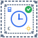
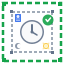
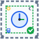

01. 基本配置
バリ: 上下左右中央
要素バランス配置
要素バランス配置

02. 対角配置
バリ: 対角線重視
非対称レイアウト
非対称レイアウト

03. 変則配置
バリ: 逆対角配置
動的な印象
動的な印象
04. 複数バリ配置
バリ: 上部2箇所
安定感重視
安定感重視
05. 非対称配置
バリ: 左側強調
ユニークな構成
ユニークな構成
06. サイド強調配置
バリ: 下部・右側2箇所
横長印象
横長印象
07. バランス配置
バリ: 複数箇所分散
均等な印象
均等な印象

08. 対角重視配置
バリ: 上下に集中
縦長印象
縦長印象

09. シンプル配置
バリ: 最小限構成
洗練された印象
洗練された印象
10. 四隅配置
バリ: 四隅＋左右
枠組み強調
枠組み強調